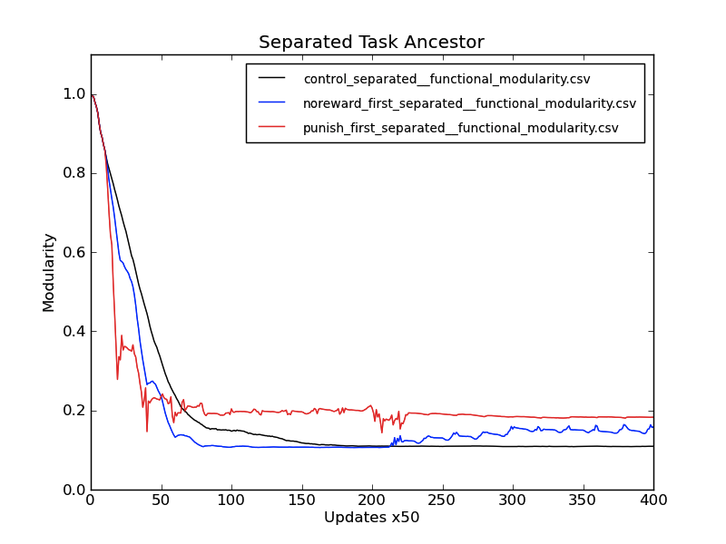
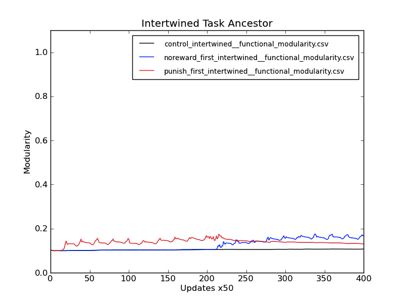

Week of January 30, 2012
Monday 1/30/12
3:14 PM
STATUS:
- Still waiting for the various batches of Job 061 to finish.
PLAN:
- Experiment: Test whether scatter genome is beneficial for evolving new tasks.
- Summary: Prepare tournament runs between XOR/EQU genomes: one with the tasks compacted into each other, and the other being scattered.
- Seed Organisms:
- Gather the dominant at the end of the recovery period of the last phase in punishment run.
- Compete against the dominant at the end of the recovery period of the last phase in no reward run, of the run with the same seed as the punishment run.
- Environment:
- Regular logic-9 fitness landscape. No fluctuation.
- Winner:
- Identify the base ancestor of the final dominant.
- Measure:
- Population modularity
- Two-task organism modularity
- Individual organism modularity
- Individual organism modularity under two-task regime.
- Pull out functional and physical modularity
- Functional modularity: proportion of non-overlapping sites
- Physical modularity: ?? (look at legend)
- Figure out how to statistically measure the fluctuation effect on the speed of achieving the modularity basement.
- Extract fitness (!) and graph along with modularity.
- This should help me connect fitness with inverse modularity
- Taking the output of 061 reanalysis to generate confidence intervals
- Check on whether the modularity measures at a sample point are normally distributed. If so, I can just use error bars.
- Experiment: Test whether the modularity can be correlated to the environment. (ED: Job 062)
- Summary: Prepare environment that does fluctuation for a period in punish, then period of no reward, then period of punish, etc., and see if modularity measures track with the treatment. This will help to eliminate any contingency effects.
Tuesday 1/31/12
10:58 AM
STATUS
- Prepared and submitted job 062, which tests the contingency effects
- Prepared a script to back the data up mid-stream. This provides some peace of mind in case of wallclock kills of my ridiculous analysis step.
: ${1?"Usage: $0 DATA_DIR_PREFIX SEED"}
: ${2?"Usage: $0 DATA_DIR_PREFIX SEED"}
echo Making Directory /mnt/scratch/caninoko/$1/data_backup_$2
if [ ! -e /mnt/scratch/caninoko/$1/ ];
then
echo ERROR: /mnt/scratch/caninoko/$1 does not exist.
exit 1
fi
mkdir /mnt/scratch/caninoko/$1/data_backup_$2
echo Copying Data
cp ./data/* /mnt/scratch/caninoko/$1/data_backup_$2/
echo DONE
LAB MTG NOTES:
- Add “foreach” equivalent feature to avida analyze mode
THOUGHTS:
- To measure physical modularity, use ratio of fields:
- 11 & 12 – Average # of sites necessary for each task
- 16 & 17 – Average task length
# Avida analyze modularity data
A# 1: organism length
B# 2: number of tasks done
C# 3: number of sites used in tasks
D# 4: proportion of sites used in tasks
E# 5: average number of tasks done per site
F# 6: average number sites per task done
G# 7: average number tasks per site per task
H# 8: average proportion of the non-overlaping region of a task
I# 9-17: average StDev in positions used for task 1-9
J# 18-26: average number of sites necessary for each of the tasks
K# 27-36: number of sites involved in 0-9 tasks
L# 37-45: average task length (distance from first to last inst used)
A 1 - 123.643
B 2 - 1.2624
C 3 - 16.7156
D 4 - 0.136069
E 5 - 1.17033
F 6 - 15.495
G 7 - 0.939564
H 8 - 0.794587
I 9,10 - 2.97058 2.32495
J 11,12 - 15.5243 18.065
K 13,14,15 - 106.928 13.0356 3.68
L 16,17 - 19.4028 6.3904
Wednesday 2/1/12
5:41 PM
STATUS:
- Job 061 finally finished. Tarring and copying.
- FUCK. Most of the job got walltime killed AGAIN. MOTHER FUCKER.
Thursday 2/2/12
5:45 PM
STATUS:
- Modified cAnalyze.cc and cAnalyze.h to add CommandIndividualModularity(…) which prints out the individual modularity measures in a file.
- Recompiled and brought it over to the HPC with a different version tag, so the output is identifiable. :/
LOG:
- Building, and running job 062 with a modified analyze.cfg to make the thing run a lot faster. So annoying.
Friday 2/3/12
2:30 PM
STATUS:
- Job 062 seems to be running orders of magnitude faster. Whee!
LOG:
- Developing a script to pull apart the INDIVIDUAL_MODULARITY output, which includes a line for every living organism. The script “extract_line_on_condition.py” takes a column parameter, and an expression to evaluate. If the expression is true, it keeps the line and writes it to a new file, named after the original file with a prefix prepended.
rosiec@atlantis:~/research/Devolab Research/evolution_of_modularity/raw_data/062/punish_first_intertwined_620005/data$ python ../../../../../scripts/common\ modules\ and\ helper\ scripts/extract_line_on_condition.py 2 " > 1" two_task_only individual_modularity-?.dat* individual_modularity-??.dat* individual_modularity-???.dat* individual_modularity-????.dat* individual_modularity-?????.dat*
Saturday 2/4/12
12:57 PM
STATUS:
- Job 062 finished! :D Tarring and copying.
[caninoko@dev-intel07]:[5]:[/mnt/scratch/caninoko/062]:$ mkdir populations/; for i in *_??????; do if [ ! -e $i.tar.gz ] ; then mkdir $i/data/populations/; mv $i/data/detail* $i/data/populations/; mv $i/data/populations/ ./populations/$i; tar -cvf $i.tar.gz $i ; else : ; fi; done
Sunday 2/5/12
9:53 AM
STATUS:
- Successfully established a tunnel to atlantis so that I could connect to my file volumes!
[rosiec@George-Hammond]:[2]:[~]:$ sudo ssh -L 549:atlantis.local:548 rosiec@atlantis.kkoning.net
- Then, connected using Apple-k -> afp://localhost:549
PLAN:
- Contents of Job 062 finished copying to atlantis. Now I just need to gather up all the bits and pieces.
- Graph the Modularity!
- First step is to go through and extract all the two-task modularity organisms (see script above) for each update sample (detail file).
- Then, I need to generate the average modularity for each update sample (detail file), along with the std deviation, etc.
- Result file, every line is a sample update, and in a line is:
- Average Functional Modularity
- Functional Modularity STD
- Average Physical Modularity
- Physical Modularity STD
- Calculated from the two values near the end of the raw data file
- 11 & 12 – Average # of sites necessary for each task
- 16 & 17 – Average task length
- Also test the distribution fit and see if normal is acceptable, which it probably isn’t. So… see about generating confidence intervals some other way. (for the life of me, I can’t remember how.) But this is ok for now.
- Once I have the average modularity for each update sample and each run, graph them out in the usual way.
- Co-Graph the # of organisms doing # of tasks at any given time.
- Go through and extract the counts for each sample update in a run into a csv.
- Result file, every line is a sample update, containing
- # organisms doing 0 tasks
- # organisms doing 1 task
- # organisms doing 2 tasks
LOG:
- Doing the initial two-task data extraction:
rosiec@atlantis:~/research/Devolab Research/evolution_of_modularity/raw_data/062$ for i in *_??????; do echo $i; cd $i/data; rm two_task_only*.dat*; python ../../../../../scripts/common\ modules\ and\ helper\ scripts/extract_line_on_condition.py 2 " > 1" two_task_only individual_modularity-?.dat* individual_modularity-??.dat* individual_modularity-???.dat* individual_modularity-????.dat* individual_modularity-?????.dat*; cd ../../; done
- Some of the data is now extracted. Writing the script to do step 2.
11:47 PM
STATUS:
- Extracted all the functional modularity stats.
rosiec@atlantis:~/research/Devolab Research/evolution_of_modularity/raw_data/062$ for i in *_??????; do echo $i; cd $i/data/; rm two_task_functional_modularity__stats.csv ;python ../../../../../scripts/common\ modules\ and\ helper\ scripts/extract_single_column_to_csv.py -c 8 two_task*-?.dat* two_task*-??.dat* two_task*-???.dat* two_task*-????.dat* two_task*-?????.dat* >> two_task_functional_modularity__stats.csv; cd ../../; done
- Modified extract single column to pull things out in a second round by defining a customizable separator using the –s option.
rosiec@atlantis:~/research/Devolab Research/evolution_of_modularity/raw_data/062$
rm punish_first_separated__functional_modularity.csv; for i in punish_first_sep*; do cd $i/data/; python ../../../../../scripts/common\ modules\ and\ helper\ scripts/extract_single_column_to_csv.py --dimensionality 1 -s "," 1 two_task_functional_modularity__stats.csv >> ../../punish_first_separated__functional_modularity.csv; cd ../../; done
rm noreward_first_separated__functional_modularity.csv; for i in noreward_first_sep*; do cd $i/data/; python ../../../../../scripts/common\ modules\ and\ helper\ scripts/extract_single_column_to_csv.py --dimensionality 1 -s "," 1 two_task_functional_modularity__stats.csv >> ../../noreward_first_separated__functional_modularity.csv; cd ../../; done
rm control_separated__functional_modularity.csv; for i in control_sep*; do cd $i/data/; python ../../../../../scripts/common\ modules\ and\ helper\ scripts/extract_single_column_to_csv.py --dimensionality 1 -s "," 1 two_task_functional_modularity__stats.csv >> ../../control_separated__functional_modularity.csv; cd ../../; done
rm control_intertwined__functional_modularity.csv; for i in control_inter*; do cd $i/data/; python ../../../../../scripts/common\ modules\ and\ helper\ scripts/extract_single_column_to_csv.py --dimensionality 1 -s "," 1 two_task_functional_modularity__stats.csv >> ../../control_intertwined__functional_modularity.csv; cd ../../; done
rm noreward_first_intertwined__functional_modularity.csv; for i in noreward_first_inte*; do cd $i/data/; python ../../../../../scripts/common\ modules\ and\ helper\ scripts/extract_single_column_to_csv.py --dimensionality 1 -s "," 1 two_task_functional_modularity__stats.csv >> ../../noreward_first_intertwined__functional_modularity.csv; cd ../../; done
rm punish_first_intertwined__functional_modularity.csv; for i in punish_first_inter*; do cd $i/data/; python ../../../../../scripts/common\ modules\ and\ helper\ scripts/extract_single_column_to_csv.py --dimensionality 1 -s "," 1 two_task_functional_modularity__stats.csv >> ../../punish_first_intertwined__functional_modularity.csv; cd ../../; done
- Generated graphs from this data.
rosiec@malp:/Volumes/Atlantis/research/Devolab Research/evolution_of_modularity/raw_data/062$ python ../../../scripts/generate_graphs_from_raw_data/plot_from_csv.py -o -t "Intertwined Task Ancestor" -x "Updates x50" -y "Modularity" comparitive_modularity__intertwined__two_task.png control_intertwined__functional_modularity.csv noreward_first_intertwined__functional_modularity.csv punish_first_intertwined__functional_modularity.csv
rosiec@malp:/Volumes/Atlantis/research/Devolab Research/evolution_of_modularity/raw_data/062$ python ../../../scripts/generate_graphs_from_raw_data/plot_from_csv.py -o -t "Separated Task Ancestor" -x "Updates x50" -y "Modularity" comparitive_modularity__separated__two_task.png control_separated__functional_modularity.csv noreward_first_separated__functional_modularity.csv punish_first_separated__functional_modularity.csv

ANALYSIS:
- Interestingly, it looks like, once established, the scatter is hard to re-compact. Or, maybe it’s beneficial?
- In both cases of punish first (separated and intertwined), there may be a slope back toward the modularity basement, but it didn’t go long enough to get a clear picture…
- In the case of punish first intertwined, it’s clearly not done climbing the hill.
- THOUGHT: Is the scatter a kind of modularity? I know the punishment basement is higher than the no-reward basement. Does this mean that the genome is forming more tightly coupled functional sub-modules of commonality between XOR and EQU, that are being preserved?
- HOW DO I QUANTIFY THIS?
- Is there a predictable balance (a ratio) between the scattered bits (the one-off bits of code) and the shared components that are being reused? Is there a way to figure this out? Are the bits that are scattered the ONE OFF SEGMENTS? I can check on this by seeing whether the scattered bits belong to only one task, not both.
- In the case of no-reward, it definitely separates out as soon as punishment is applied. I think this can be quantified as an increase in scatter. TODO – extract this measurement!